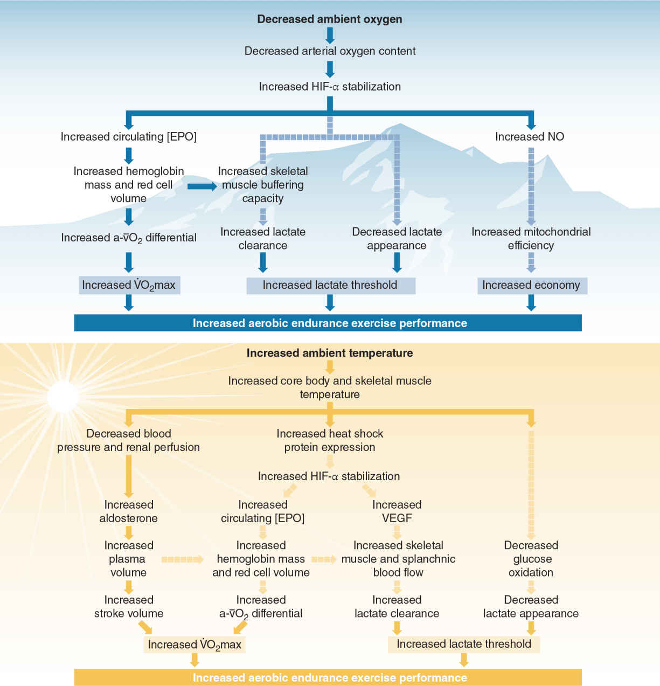
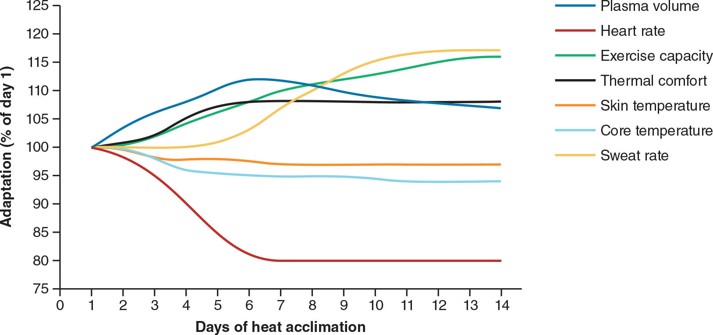

Aerobic Exercise Adaptations(僅供術語對照)|原文頁碼 p339-p383
長期有氧耐力訓練讓身體「取氧、送氧、用氧」的每一環都變強:每搏輸出量與最大攝氧量上升、毛細血管與粒線體增加、乳酸閾值後移;而海拔、高溫、吸菸、血液興奮劑與停訓等外部因素,會加速、阻擋或逆轉這些適應。
有氧訓練後最穩定的改變是:靜息與次最大運動時心率下降,每搏輸出量(stroke volume)上升,最大心輸出量(cardiac output)上升。最大心輸出量的提升主要來自每搏輸出量,而不是心跳變快。最大心率通常不變,甚至隨訓練年資略微下降,研究者認為這與副交感神經張力增強有關。
考試要把變因串起來:最大攝氧量(maximal oxygen uptake, VO2max)= 最大心輸出量 × 動靜脈氧差(arteriovenous oxygen difference, a-vO2 diff)。心臟送出更多血、肌肉每單位血液抽走更多氧,攝氧量才會上升。左心室腔室容積、心壁厚度與收縮力增強,是次最大與最大運動每搏輸出量提升的關鍵。
正常的竇房結(sinoatrial node)放電頻率是每分鐘 60 至 80 次。訓練增強副交感神經張力,讓這個節拍器放慢;每搏輸出量變大後,心臟不用跳那麼多次就能維持同樣心輸出量。所以菁英耐力運動員常出現運動性心搏過緩(athlete's bradycardia),靜息心率落在每分鐘 40 至 60 次。他們運動後的心率回復也比較快,這是訓練監測的好指標。周邊方面,毛細血管密度(capillary density)隨訓練量與強度增加,氧與代謝物的擴散距離縮短,散熱與排出代謝廢物也更快。
肺通氣通常不會限制有氧運動表現,受訓練的影響極小。只有訓練量極大的菁英選手,全身有氧需求才可能接近呼吸系統的功能上限。通氣適應很「偏心」:下肢訓練產生的適應主要侷限在下肢,做上肢活動時並不明顯,因為乳酸與二氧化碳的產生與排出模式未受到同樣的訓練。最大運動時潮氣量(tidal volume)與呼吸頻率都會增加;次最大運動時呼吸頻率下降、潮氣量上升。
慢性有氧訓練的神經適應研究還不多,但已知它能改善肌肉動員:提高肌肉協同激活、增強腿部剛度、提高離心收縮與向心收縮的活動比,讓身體更能回收儲存在肌腱的彈性勢能,降低動作的代謝成本。訓練有素的自行車手與跑者,踩踏與步幅之間的肌肉活動變異更小、持續時間更短。鐵人三項等多項運動選手的肌肉協同模式較多元,反映多項目訓練對神經肌肉適應的幹擾。
運動經濟性(exercise economy)由生物力學、技術與代謝、心血管、神經肌肉效率共同決定。兩名選手的 VO2max 與乳酸閾值可以完全相同,成績卻不同:經濟性較佳的那一位,能以同樣的氧耗維持更快的配速。
肌肉層的適應集中在氧化能力:毛細血管密度上升,粒線體(mitochondria)的體積與數量增加,肌紅蛋白(myoglobin)含量上升,氧化酶活性提高,肝醣(glycogen)與三酸甘油酯、ATP、磷酸肌酸的儲存增加,脂肪氧化提升。肌紅蛋白是在細胞內運輸氧的蛋白質;粒線體則是氧化丙酮酸、乳酸與遊離脂肪酸、有氧合成 ATP 的細胞器。兩者同步提升,肌肉提取與利用氧的能力也隨之增強。訓練還會「節省肌肝醣」:同樣的運動中肝醣消耗較少、脂肪動用較多,運動時間便能延長。
這些改變把血乳酸堆積起始點(onset of blood lactate accumulation, OBLA)往後推:訓練有素的運動員在高達有氧能力 80% 至 90% 時才開始淨累積乳酸,因為肌肉生成乳酸的速率能跟上肌肉與其他組織清除乳酸的速率。這也呼應臨界功率(critical power,即最大有氧氧化能力)的提升。
肌纖維的規則要逐條記:訓練可提升 I 型與 II 型纖維的有氧潛能,但訓練前後 I 型的氧化能力都比 II 型高。證據支持 IIx 與 IIa 之間可逐漸轉換,II 型直接轉成 I 型的證據很少;IIa 的氧化特性比 IIx 更強、性質更接近 I 型。混合肌纖維(mixed fibers,同一纖維混合兩種以上肌球蛋白重鏈亞型)會隨訓練量增減:16 週馬拉松訓練後,腓腸肌混合纖維比例約降 50%,I 型比例上升。纖維不會變大:13 週馬拉松訓練讓兩型纖維尺寸都減少約 20%,力量卻維持不變,3 週減量後 IIa 纖維力量反而增加 18%。有氧訓練後的轉化方向是「更氧化」,不是「更大更強」。
骨骼只對「超過日常門檻的載重」有反應。跑步的重複高衝擊(數倍體重)最能促進骨生長;騎車與游泳屬非負重運動,對骨骼的刺激小,甚至使未承重部位的骨密度下降。研究發現,自行車選手腰椎的骨密度低於不運動的對照組;跑者的總骨密度與腿部骨密度則高於對照組。刺激骨骼需要明顯高於日常、並週期性增加的強度,還要提高肢體的運動速率,因為骨骼針對載重的大小與速率產生反應。高強度間歇訓練,或有氧與阻力訓練結合的同步訓練(concurrent training),是補足骨骼刺激的做法。
肌腱與韌帶由膠原纖維束組成。運動刺激持續超過日常壓力後,纖維的數量、大小與密度增加,肌腱與韌帶的強度上升。增強幅度與刺激強度成正比,負重運動尤其明顯。至於「跑步傷膝」的疑慮:對沒有骨關節炎病史的人,跑步並未增加膝關節疼痛或症狀性膝關節骨關節炎的風險,甚至可能透過強化關節周邊肌力與本體感覺,帶來些許保護作用。前菁英選手的追蹤也顯示,耐力型選手的骨關節炎入院年齡明顯晚於力量型與綜合型項目選手(約 90 歲);研究認為,較低的體重指數與較積極的生活方式是其原因。但訓練的持續時間、強度或頻率過高時,訓練總量本身仍可能成為風險因子。
高強度有氧訓練會提高多種荷爾蒙在最大強度下的絕對分泌率;訓練有素者對同樣絕對強度的次最大運動,荷爾蒙反應較弱;但改以同樣相對強度運動時,反應與未訓練者相似。強度極高、時間極短(5 至 10 秒)的運動,周邊血液的荷爾蒙只出現「戰或逃」式的改變,也就是腎上腺素與去甲腎上腺素上升。賽季中,跑步里程越多、能量可用性越低,基礎睪固酮濃度越低,這與相對能量不足(relative energy deficiency in sport, RED-S)相關,細節見第 11 章。
有氧運動(尤其跑步)會急性增加肌肉淨蛋白質分解,一部分來自壓力刺激下的皮質醇上升,同時睪固酮與類胰島素生長因子(IGF-1)等合成荷爾蒙也上升。耐力選手的骨骼肌仍存在淨蛋白質合成,但增加的主要是粒線體蛋白而非收縮蛋白,所以「練有氧長出來的肌肉」成分與重訓不同。肌原纖維蛋白與粒線體蛋白的合成時間與速率會受運動強度與營養交互影響,運動後除了碳水化合物,也要補充優質蛋白質。
海拔高於 3,900 英尺(1,189 公尺)時,大氣氧分壓下降,身體立刻啟動急性代償。第一,靜息與運動時的肺通氣量增加(過度通氣),初期以呼吸頻率加快為主,停留較久後潮氣量也增加。第二,靜息與次最大運動心輸出量上升,主要靠心率加快:次最大心率與心輸出量可比海平面值高 30% 至 50%,每搏輸出量不變或略降。這是為了在動脈血氧含量下降時,加大血流以滿足組織的氧需求。
在固定海拔停留 10 至 14 天後,紅血球生成(erythropoiesis)上升,心率與心輸出量開始回到接近正常,表示慢性適應接手急性代償。慢性改變包括:血紅素生成增加約 5% 至 15%(也有更高報告)、紅血球生成增加 30% 至 50%、肺部的氧擴散能力增強、經腎排出碳酸氫根以配合過度通氣維持酸鹼平衡、毛細血管密度增加。充分適應後運動能力可接近海平面水平,但無論適應多久,海拔下的表現通常仍低於海平面。中等海拔(2,200 至 3,000 英尺,608 至 914 公尺)至少需要 3 至 6 週適應。返回海平面後,這些改變約在一個月內消退。
機制的起點是低氧(hypoxia):缺氧誘導因子(hypoxia-inducible factor, HIF)上升,帶動促紅血球生成素(erythropoietin, EPO)與一氧化氮(nitric oxide, NO)相關基因的表現,紅血球體積與血紅素隨之增加,攜氧能力與動靜脈氧差變大。這條鏈要畫得出來,圖 6.1 見圖表區。
高溫高濕環境讓心率、攝氧量、每分鐘通氣量與血乳酸都惡化:散熱需要增加排汗與皮膚血流,與肌肉爭奪血流;水分補充不足又會造成脫水。多重壓力疊加,表現下滑。長期反覆接觸熱環境可以產生熱適應(heat acclimation):在自然環境下暴露稱 heat acclimatisation,以熱適應方案進行的人工暴露稱 heat acclimation,兩者引發同一組適應。
慢性改變包括:出汗提前,排汗率與蒸發散熱能力增強;靜息與運動時的皮膚與核心體溫下降;血漿容量(plasma volume)擴張、血容量增加;靜息與運動心率下降;腸胃不適減輕。效益面:計時賽成績提升,乳酸閾值處的攝氧量與功率輸出提高,強度感知與熱舒適度改善。時間軸要背:接觸第 1 天體溫調節變化就啟動,約 75% 的適應在最初 4 至 6 天完成;各機制啟動速度不同,排汗率的提升則在整個適應期持續上升。
代價是「會退」。舊說法是每適應 1 天可維持 2 天,新研究認為每脫離熱環境 1 天就流失約 2.5% 的適應;若不重複熱刺激,完整熱適應預計約 1 個月消失。適應得快,退得也快。在乾熱環境建立的適應,可能比濕熱維持更久;不同環境間的交叉適應已有初步證據支持。體適能較佳的人耐熱較強,也可能較能保持適應。女性在高溫下核心溫度升幅較大(全身排汗量較低,相同升溫下排汗增幅較小),建立體溫調節與心血管穩定可能需要更長的方案。性別與體適能水平都應納入方案設計。
兩條路徑的機制不同(見圖 6.1 對照)。高原:低氧經 HIF-EPO 增加紅血球與血紅素,走「攜氧」路線。熱:核心溫度上升導致中心靜脈壓與腎臟灌注下降,醛固酮(aldosterone)分泌增加,血漿容量突然大幅擴張,每搏輸出量上升,走「血量」路線。兩者一正一反:高原訓練在急性期反而使血漿容量下降;低氧暴露所需的時間通常也比熱適應長。
能否兩者全要?研究顯示效益不易加總:熱訓練再加上低氧暴露,生理壓力更大,額外好處卻有限,高溫下的運動表現沒有比單獨熱訓練更好。選擇原則很實際:比賽日的哪項環境最影響表現,就優先適應哪項。備戰海拔 2,500 至 3,000 公尺的馬拉松,選高原;比賽地在海平面,卻溫暖潮濕、明顯熱於平時的訓練環境,選熱適應。比較訓練與比賽環境,並參考選手現況,個別化安排。
高氧呼吸(hyperoxic breathing):休息或運動後吸入富氧混合氣體,可短期改善氧氣輸送、乳酸代謝、功率輸出與運動耐力;但長期系統性補充的研究結果矛盾、整體益處甚微。原因很直白:健康人在海平面呼吸空氣時,動脈血氧飽和度已有 95% 至 98%,血液能多攜帶的氧很有限。
吸菸:吸菸者攝氧量較低、運動時心率反應減弱、肌肉耐力下降,這些現象在青少年菸民身上同樣可見。香菸裡的一氧化碳對血紅素的親和力高於氧,形成的碳氧血紅素(carboxyhemoglobin)直接削弱攜氧能力;兒茶酚胺釋放增加,推高心率與血壓;尼古丁使細支氣管收縮、呼吸道纖毛癱瘓,氣道阻力上升、碎屑堆積。電子煙:2019 年美國有 27.5% 的高中生使用;尼古丁經兒茶酚胺讓心率與舒張壓短期上升,並造成肺部發炎、肺活量下降;頻繁使用者的峯值攝氧量較低,跑 2 英里(3.1 公里)比不使用者與傳統紙菸使用者都慢。長期影響的證據仍不足。
血液興奮劑(blood doping):輸注紅血球見效快但只維持數週;注射 EPO 起效慢、效果持續到停藥為止。兩者都能讓 VO2max 提升最高達 11%,次最大負荷下心率與血乳酸下降、pH 上升。風險包括栓塞事件(中風、心肌梗死、深層靜脈血栓、肺動脈栓塞),EPO 還可能升高血壓、引發類流感症狀、造成血鉀上升。它能減輕海拔的影響,但海拔越高益處越小;對高溫環境的好處主要限於已熱適應者,且相當有限。
遺傳潛能:每個生物系統的適應都有上限,越接近上限,進步幅度越小;精英層級要提升 0.05%,就得依靠更精確的計畫與監測。
停訓(detraining)遵循訓練可逆性原則(reversibility):停止訓練後,適應便部分或完全逆轉。有氧適應的基礎是酵素系統,因此對不活動最敏感。訓練有素者短期停訓(4 週)會使 VO2max 下降 4% 至 14%,長期停訓(超過 4 週)下降 6% 至 20%;機制是血容量減少、每搏輸出量與最大心輸出量下降、次最大心率上升。減量訓練(tapering)則是主動、有計畫地減少訓練量(減少時長與頻率,強度不變),目的是讓表現與適應在賽前提升,不要與停訓混為一談。適當的項目變化、強度維持與積極恢復,可以大幅減緩停訓的衝擊。
| 主題 | 必背數字或規則 |
|---|---|
| 最大心率 | 訓練後不變或略降(副交感張力增強);下降的是靜息與次最大心率 |
| 心率門檻 | 竇房結正常放電 60 至 80 次/分;菁英耐力選手靜息 40 至 60 次/分(運動性心搏過緩) |
| VO2max 提升 | 未訓練者最高約 +20%;精英僅 +5% 至 10%;整體 +5% 至 30%,多數在 6 至 12 個月內達成 |
| OBLA | 訓練者到高達有氧能力 80% 至 90% 才淨累積乳酸 |
| 重複衝刺序列間歇訓練 | 至少 2 次、每次 ≥10 秒的衝刺,組間休息 ≤60 秒;休息過長只提升衝刺速度,不提升有氧能力 |
| 肌纖維數字 | 13 週馬拉松訓練兩型纖維尺寸 -20%;減量 3 週後 IIa 力量 +18%;16 週訓練混合纖維約 -50% |
| 極短極高強度 | 5 至 10 秒只引起「戰或逃」荷爾蒙變化(腎上腺素、去甲腎上腺素上升) |
| 海拔(急性) | >3,900 英尺(1,189 公尺)啟動急性調節;次最大心率與心輸出量比海平面高 30% 至 50%;10 至 14 天恢復正常 |
| 海拔(慢性) | 血紅素 +5% 至 15%;紅血球生成 +30% 至 50%;中等海拔 608 至 914 公尺需 ≥3 至 6 週;回海平面約 1 個月逆轉 |
| 熱適應時程 | 第 1 天啟動;4 至 6 天完成約 75%;每脫離 1 天流失 2.5%;無刺激約 1 個月消失 |
| 血液興奮劑 | VO2max 提升最高 11%;輸血效果數週,EPO 持續至停藥 |
| 高氧呼吸 | 僅短期益處;海平面動脈血氧飽和度已達 95% 至 98% |
| 電子煙 | 2019 年 27.5% 美國高中生使用;短期心率與舒張壓上升 |
| 停訓 | 4 週:VO2max -4% 至 -14%;超過 4 週:-6% 至 -20%;有氧酵素適應對不活動最敏感 |
| 體成分 | 營養充足下體脂百分比下降,去脂體重不變或幾乎不變;過度訓練則分解代謝佔上風 |
| 中文術語 | English | 一句話定義 |
|---|---|---|
| 最大攝氧量 | VO2max | 全身劇烈運動時攝取氧的最大速率,心肺適能核心指標。 |
| 每搏輸出量 | stroke volume | 心臟每收縮一次打出的血量。 |
| 心輸出量 | cardiac output | 每分鐘打出的血量,等於心率乘每搏輸出量。 |
| 動靜脈氧差 | arteriovenous oxygen difference (a-vO2 diff) | 動脈與靜脈血含氧量之差,反映肌肉提取氧的多寡。 |
| 運動性心搏過緩 | athlete's bradycardia | 耐力訓練造成的靜息心率變慢,菁英落在 40 至 60 次/分。 |
| 粒線體 | mitochondria | 氧化燃料、有氧合成 ATP 的細胞器,耐力訓練後體積與數量增加。 |
| 肌紅蛋白 | myoglobin | 在肌細胞內運輸氧的蛋白質。 |
| 血乳酸堆積起始點 | onset of blood lactate accumulation (OBLA) | 血乳酸開始淨累積的強度點,訓練後後移。 |
| 乳酸閾值 | lactate threshold | 乳酸生成速率開始超過清除速率的運動強度界線。 |
| 混合肌纖維 | mixed fibers | 同一纖維內混合兩種以上肌球蛋白重鏈亞型的纖維,隨訓練量增減。 |
| 臨界功率 | critical power | 運動員的最大有氧氧化能力,即能持續維持的功率上限。 |
| 運動經濟性 | exercise economy | 以相同氧耗維持更快配速或更高功率的能力。 |
| 同步訓練 | concurrent training | 有氧耐力訓練與阻力訓練搭配進行。 |
| 停訓 | detraining | 訓練造成的適應部分或完全喪失,遵循可逆性原則。 |
| 減量訓練 | tapering | 賽前有計畫減少訓練時長與頻率、維持強度,目的是提升表現。 |
| 熱適應 | heat acclimation | 反覆熱暴露後的慢性體溫調節與生理適應。 |
| 缺氧誘導因子 | hypoxia-inducible factor (HIF) | 低氧時上升、啟動 EPO 與 NO 相關基因表現的轉錄因子。 |
| 促紅血球生成素 | erythropoietin (EPO) | 刺激紅血球生成的荷爾蒙,也是血液興奮劑之一。 |
| 血液興奮劑 | blood doping | 以輸血或注射 EPO 人為增加紅血球、提升有氧能力的手段。 |
| 高氧呼吸 | hyperoxic breathing | 吸入富氧混合氣體;相對概念為常氧呼吸(normoxic breathing)。 |


| 項目(chronic 有氧耐力訓練) | 變化方向 |
|---|---|
| 靜息與次最大運動心率 | 下降 |
| 最大心率 | 不變或略微下降 |
| 每搏輸出量 | 增加 |
| 心輸出量(靜息/次最大;最大運動) | 不變或減少;增加 |
| 肌纖維尺寸 / 毛細血管密度 / 粒線體密度 | 不變或略增;增加;增加 |
| 肌球蛋白重鏈蛋白 | 不變或減少 |
| 儲存的 ATP、磷酸肌酸、肝醣、三酸甘油酯 | 皆增加 |
| 脂肪氧化 | 增加(肌肝醣被節省) |
| 肌肉力量 / 無氧功率 / 衝刺速度 | 無變化 |
| 最大力量輸出率(rate of max power) | 不變或減少 |
| 有氧能力 / 運動經濟性 / 肌肉耐力(低功率輸出) | 增加 |
| 肌腱強度 / 韌帶強度 | 增加 |
| 骨密度 | 無變化或增加(取決於軸向載重) |
| 體脂百分比 / 去脂體重 | 減少;無變化 |
| 生理指標 | 訓練前 | 訓練後 | 精英男 | 精英女 |
|---|---|---|---|---|
| 靜息心率(次/分) | 76.4 | 57.0 | 45 | 51 |
| 最大心率(次/分) | 192.8 | 190.8 | 196 | 193.9 |
| 最大每搏輸出量(mL) | 104 | 120 | 187 | 129.6 |
| 最大心輸出量(L/min) | 20.0 | 22.8 | 33.8 | 23.5 |
| 心臟容積(mL) | 860 | 895 | 1104 | 859 |
| 最大肺通氣量(L/min) | 128.7 | 156.4 | 164.4 | 120 |
| 最大動靜脈氧差(mL/100mL) | 16.2 | 17.1 | 15.9 | 17.6 |
| VO2max(mL/kg/min) | 36.0 | 48.0 | 90.6 | 72.8 |
| I 型纖維比例(%) | 48 | 51 | 60.8 | 60.4 至 61.8 |
| 毛細血管密度(根/mm2) | 289 | 356 | 640 | — |
| 檸檬酸合酶(μmol/min/g 濕重) | 35.9 | 45.1 | — | — |
| 琥珀酸脫氫酶(μmol/g/min) | 6.4* | 17.7* | 21.6 | 10.0 |
| 乳酸脫氫酶(μmol/g/min) | 843* | 788* | 746 | 744 |
| 磷酸果糖激酶(μmol/g/min) | 27.13 | 58.82 | 20.1 | — |
Q1.(是非題)菁英耐力運動員靜息心率 40 至 60 次/分,是副交感神經張力增強加上每搏輸出量增加的正常結果?
Ans:○ — 節拍變慢、每次打血更多,心輸出量照常維持,稱為運動性心搏過緩。
Q2.(選擇題)下列哪項「不是」有氧耐力訓練的適應?(A)每搏輸出量增加 (B)次最大心率降低 (C)運動經濟性提升 (D)脂肪氧化減少
Ans:D — 脂肪氧化是增加,同時節省肌肝醣。
Q3.(是非題)長期有氧訓練後最大心率會顯著上升?
Ans:✕ — 最大心率通常不變,甚至因副交感張力增強而略降;上升的是每搏輸出量與最大心輸出量。
Q4.(選擇題)熱適應的大部分適應(約 75%)在何時完成?(A)第 1 天 (B)最初 4 至 6 天 (C)第 3 週 (D)第 2 個月
Ans:B — 體溫調節變化第 1 天啟動,約 75% 在最初 4 至 6 天內建立。
Q5.(選擇題)訓練有素者停訓 4 週,VO2max 大約下降多少?(A)1% 至 2% (B)4% 至 14% (C)25% 至 35% (D)不變
Ans:B — 短期停訓 4% 至 14%;超過 4 週的長期停訓可達 6% 至 20%。
Q6.(是非題)熱適應提升表現的主要機制是經由 EPO 增加紅血球數量?
Ans:✕ — 那是高原路徑;熱適應經醛固酮擴張血漿容量、提升每搏輸出量,並改善散熱。
Q7.(選擇題)重複衝刺序列間歇訓練的定義是?(A)至少 2 次、每次 ≥10 秒的衝刺,組間休息 ≤60 秒 (B)至少 4 次、每次 ≥5 秒,休息 ≤90 秒 (C)至少 2 次、每次 ≥30 秒,休息 ≤120 秒 (D)單次 ≥60 秒衝刺即可
Ans:A — 組間休息過長只提升衝刺速度,對最大有氧能力的幫助有限。
Q8.(選擇題)血液興奮劑(輸血或 EPO)可使 VO2max 提升最高達多少?(A)3% (B)11% (C)25% (D)40%
Ans:B — 最高約 11%,並伴隨次最大心率與血乳酸下降、pH 上升。
Q9.(是非題)對沒有骨關節炎病史的人,跑步會明顯增加症狀性膝關節骨關節炎的風險?
Ans:✕ — 研究未見風險增加,甚至可能因關節周邊肌力與本體感覺增強而略受保護;骨密度則要靠衝擊載重,游泳、騎車的刺激較小。